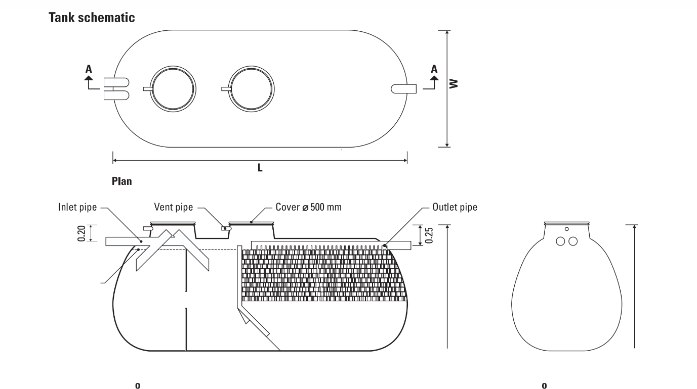

Different Types of Biological Membrane Tanks
BCM Model Waste Water Treatment Tank
Completely controlled waste water treatment package, perfect for high volume, high BOD and fluctuated
waste water. The system is divided into five chambers for solid separation, equalization, flow control, aerobic
bio-filtration and sedimentation.
Fit for High volume of waste water
Low maintenance costs. Fluctuated flow waste water allowable
For all domestic waste water
High performance with aeration.
For Condominium, Department Stores, Hospitals, Office Buildings, Central treatment of community, etc.
A large scale completely controlled treatment tank.
Perfect for fluctuating and high volume of waste.
The system is divided into five chambers for solid separation , equalization, flow control,
aerobic bio-filtration and sedimentation
Solid separation chamber stops all extra large solids prior to next step, preventing any
blockages in the water flow.
The equalization chamber regulates water flow rate while mixing all solids and pretreating
waste prior to final treatment.
Final treatment with suspended aerobic bacteria and fixed film bacteria followed by
sludge sedimentation.
Configuration of BCM Tanks
Our Tanks are able to configure due to the waste quality , volume and
area allowance. This can be configured from single tank to Two Tanks, Four
Tanks and Six Tanks form. You can consult with our technical team for better
and suitable system at your place.
Configuration of two tanks
Configuration of four tanks
Configuration of six tanks
SSA Model Waste Water Treatment Tank
Double Septic Toilet Waste Water Treatment Tank with Aerobic Bio Filter
Double septic toilet waste water treatment tank with aerobic bio filter and sedimentation ensures
best effluent ( BOD < 20 ppm ). The tank is divided into four chambers.,
-
Easy Installation
-
Low maintenance costs
-
Fluctuated flow waste water allowable
-
High stability even if overloaded.
-
For toilet and kitchen waste water
-
High Performance with aeration
-
Best for Environment care
The first septic chamber separates solids and grease, initializing anaerobic reaction
prior too the next step.
Organic waste is dissolved and suspended in water for anaerobic pretreatment in the
second chamber
Final treatment with suspended aerobic bacteria and fixed film bacteria followed by
the sludge sedimentation process.
SCA Model Waste Water Treatment Tank
Total waste water treatment tank with aerobic bio filter
Separated inflow total waste water treatment tank with aerobic bio filter and sedimentation ensures
best effluent ( BOD < 20 ppm ). The tank is divided into four chambers.,
-
Easy Installation
-
Low maintenance costs
-
Fluctuated flow waste water allowable
-
High stability even if overloaded.
-
For all domestic waste water
-
High Performance with aeration
-
Best for Environment care
With separate in flow for toilet and washing water. The total waste system is divided into
two section. A septic chamber and a bio filtration chamber.
The septic chamber separates solids. Moving light solids to the top and heavy to the
bottom, while pretreating with anaerobic reaction.
Final treatment phase is with suspended anaerobic bacteria and anaerobic bio filtration
SC Model Waste Water Treatment Tank
Total waste water treatment tank with anaerobic bio filter
Separated inflow total waste water treatment tank with aerobic bio filter and sedimentation ensures
best effluent ( BOD < 20 ppm ). The tank is divided into four chambers.,
-
Easy Installation
-
Low maintenance costs
-
Fluctuated flow waste water allowable
-
High stability even if overloaded.
-
For all domestic waste water
-
High Performance with aeration
-
Best for Environment care
With separate in flow for toilet and washing water. The total waste system is divided
into three chamber. Providing aerobic bio filtration.
The first septic chamber separates solids and grease, initializing anaerobic reaction
prior to the next step.
Organic waste is dissolved and suspended in water for anaerobic pretreatment in the
second chamber
Final treatment with suspended aerobic bacteria and fixed film bacteria followed by the
sludge sedimentation process.

PA Model Waste Water Treatment Tank
Economical waste water treatment tank
An economical toilet waste water treatment tank with anaerobic filtration with one septic chamber
and bio filter chamber.
-
Easy Installation
-
Low maintenance costs
-
Good for continuous waste water flow rate
-
Economical price
-
For toilet waste water
With separate in flow for toilet and washing water. The total waste system is divided into
two section. A septic chamber and a bio filtration chamber.
The septic chamber separates solids. Moving light solids to the top and heavy to the
bottom, while pretreating with anaerobic reaction.
Final treatment phase is with suspended anaerobic bacteria and anaerobic bio filtration